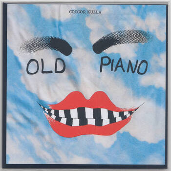
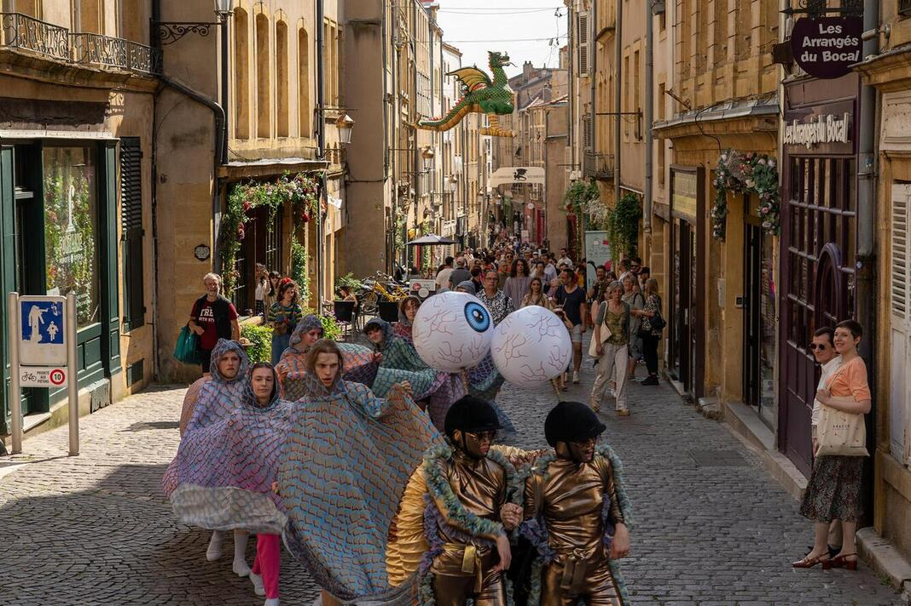
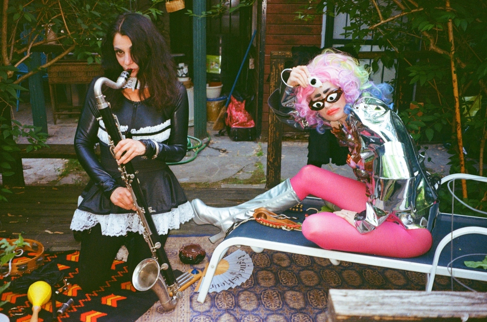
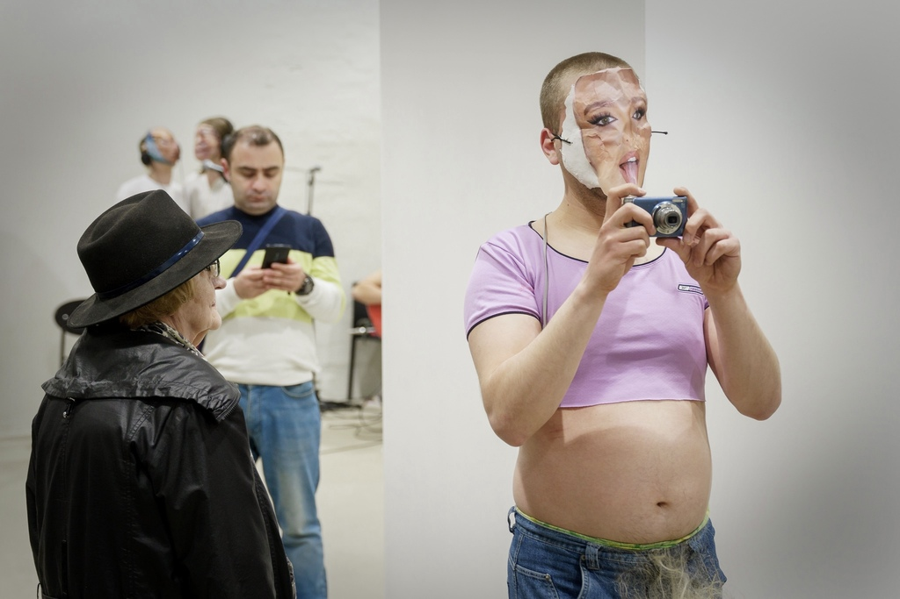
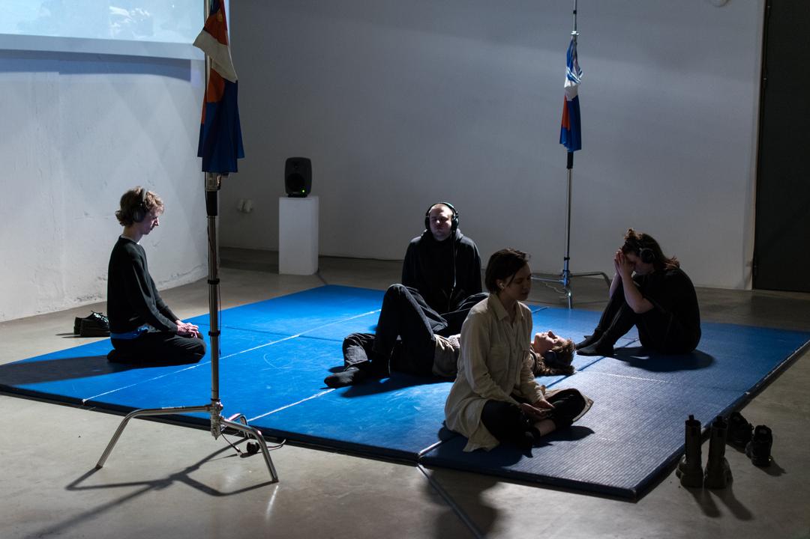
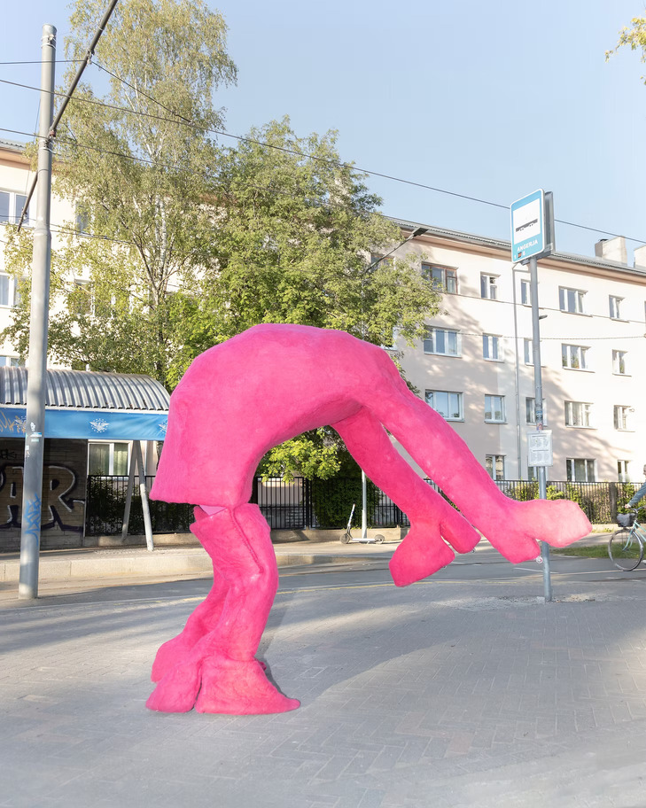

album
Old Piano limited 7" vinyl MIDA Records
Music for a mocumentary by Kris Lemsalu & Johanna Ulfsak.  Bandcamp
film/performance
The Snail Pace for ensemble 2025
A suite for Kris Lemsalu's performance The Snail Pace.
Premiered by Lina Ghin (violin), Maëlyne Mathis (flute), Remi Toussaint (clarinet), and Jan Ulbrich (violin)  Photo by Jade Zombo More info Gallery
Old Piano 2024
Soundtracks for a mocumentary by Kris Lemsalu & Johanna Ulfsak.
Performed by Miia Ruubel (violin), Karl Tipp (alto saxophone), Loo Arukask (cello), Anni Karu (vibraphone, congas), and Gregor Kulla (percussion, piano)
 Photo by Johanna Ulfsak. Courtesy of the artists and Temnikova & Kasela Gallery Bandcampsecond relief for six performers, their voices, two bass guitars, and electronics 2023
A performance and electroacoustic composition for an audiovisual festival COMMUTE.
Premiered by Andreas Kübar (performer), Riin Maide (performer), Gregor Kulla (performer), Nele Tiidelepp (performer), Henri Särekanno (performer), Mattias Jürgen Veller (performer), Ekke Janisk (bass guitar), and Uku Õunapuu (bass guitar)
 Photo by Ma Ei Saa Aru Festival More inforelief for six performers, their voices, and electronics 2022
A performance and electroacoustic composition for an exhibition festival...showcase.
Premiered by Andreas Kübar (performer), Riin Maide (performer), Gregor Kulla (performer), Nele Tiidelepp (performer), Henri Särekanno (performer), and Mattias Jürgen Veller (performer)
 Photo by Saara-Liis Jõerand More infoorchestra
On meele meelitaja videviku värvi / The Beguiler of The Mind Is The Color of Dusk for sinfonietta and a speaker 2024, revised in 2025
The title of the work comes from the 16th-century devotional Hindu 'blind poet' Surdas (Sanskrit: सूरदास, romanized: Sūradāsa), where he refers to a parrot–the parrot being himself, but in mentioning the bird the author also refers to the third verse of the Bhagavata Purana, a staple text of Hindu culture, where it is said that the narratives in the work have been given added flavour by the touch of the speaker, Shukadeva (literally ‘divine parrot'). Here is the Indian cultural conviction that what is consciously shared increases its ‘flavour’, meaning depth and value. Suradasa's poetry can be read in Estonian in Mathura's translation (Elada, et olla ookean, Allikaäärne 2018). I thank Mathura for his help with the Hindi and English translation of Surdas’ texts. The content of the piece is an excerpt from State of Siege (2002) by Palestinian poet and writer Mahmoud Darwish. The work was written while the poet was under siege in Ramallah during the 2002 Israeli invasion.
If you shall not be a rain my love be a tree saturated with fertility…be a tree and if you shall not be a tree my love be a stone saturated with humidity…be a stone and if you shall not be a stone my love be a moon in the loved one’s dream…be a moon
An Estonian 00s pop idol, Ines’s song Iseendale (To Yourself) will be heard before the end, as if sung under the shower.
2024 premiere by EAMT Sinfonietta (conducted by Toomas Vavilov, speaker Tõnu Kõrvits), 2025 premiere by Avanti! Orchestra (conducted by Jutta Seppinen, speaker Gregor Kulla) Soundcloud
ensemble
i stand and watch for double bell brass quartet 2024
It's dark. There is only you and a pool of water, which does not seem to have a beginning nor an end. It's still, but flowing. You're standing on a lump of grass and looking.
Premiered by Ensemble Musikfabrik Youtube
oja / brook for piano quintet 2024
There are many things associated with the brook. First of all, a poem my grandmother had in her bedroom drawer, from which she borrowed the idea of drowning herself in the brook. Then, walking to the brook in the Intsikurmu forest. The brook was so deep in the forest and so deep in the ground. Two logs had been placed on top of it to get over it. We kept going there and staying there. Then the Piusa Caves brook, where I remember drinking spring water for the first time. I was very small, and the water was very cold. Then there was the brook behind the Põlva Song Celebration grounds, where we used to barbecue and where the dog always wanted to dig a hole. You could call it a river. A brook at my friend’s parents’ house in Kullamaa (haha), where they jumped in after a sauna. Too cold for me. There was a lake in my countryside, and brooks around it, which you could never see because they were covered with all kinds of vines. Only to be heard.
Once again, become a singing brook. Flow forth, as long as you can. Don’t get stuck amidst hills and mounds. Seek for valleys and circle around. Dive in deep, when roadblocks abound like a spring to simmer unbound. Original poem: Veel kord laulvaks ojaks end muuda. Voola veel, niikaua kui suudad. Künkail ja kinkudel ära jää kinni. Orgusid otsi ja ringle ringi. Sukeldu, kui oled ummikus teega, allikana et välja keeda. Aleksander Suuman. Excerpt from a poem Ojaks saamine (Becoming a Brook) translated by Gregor Kulla.
Premiered by Gregor Kulla (conductor), Olga Oja (piano), Alexander Gonzales Pavlova (violin), Elbe Reiter (violin), Maria Ridbeck (viola), and Loo Arukask (cello) Soundcloud
it's sleepy time for piano, alto saxophone and fixed media 2023
I imagine that someone who cares about you might say that to you. And I imagine that you really want to go to sleep. Or just lie down. And maybe it's dark outside. The work exists somewhere between being awake and falling asleep. When I still lived in Põlva, I often fell asleep to the sound of the TV and my mother or aunt chatting in the other room. Yellow street lights shone through the window and I could hear cars driving into the parking lot of the neighboring apartment building. I didn't think about anything. Looking back, I can't remember a situation where I felt more protected. My mother is calm, I am calm, the movie is playing. Commercials. The alternation between film and commercials is like an eternal inertia that never subsides. My perception of time, the passage of time. It's a little too hot under the blanket. This work was written with Karl Tipp and Lea Valiulin in mind.
Premiered by Lea Valiulina (piano) & Karl Tipp (alto saxophone)
so shocked for six voices and background noise 2023
The piece is written for Lisette Sivard's social performance for the suburbs of tallinn sad mascots for the broken people.
Premiered by Ekke Janisk, Jarþrúður Iða Másdóttir, Emilía Ósk Bjarnadóttir, Maarja Tosin, Lyly Letzer, and Johanna-Lisa Zelinski  Photo by Elo Vahtrik Soundcloud More info
draaag her for ensemble 2023
The piece originated from Julia Skelly's edited book The Uses of Excess in Visual and Material Culture, 1600-2010, on minority culture and camp practices. While composing, I used tools and means related to gender and sexuality through which they are “controlled"–exaggeration (excess), performativity, deviance, and opposition–to subvert expectations about what is considered "normal" or "appropriate." I sought the feeling of confident embarrassment, shame, as well as tenderness and fragility. The title refers to a slogan that spectators would use when a drag queen "reads" someone (cutting and humorous critique towards somebody, originated from the LGBTQ+ community). The piece uses the musician Flumen's recent single "Kuule poiss" and its remix by boipepperoni. Kisses to my friend Keiu Kirkmann, who recommended this book to me.
Premiered by Ensemble U: Soundcloud
within space for four hands 2023
space within is a series of translation processes. The work is akin to the solo piano piece space, which was written for pianist Talvi Hunt, and can be viewed in some ways as the second part of that work. However, instead of writing a sequel, a second part, a next act, I wanted to delve deeper into the perspective. To go further into the first part, so to speak. The tool I used was the translation process, with which I processed the existing material. The work consisted of three stages: first, I tried to capture the gestures that sounded in "space" on paper in order to visualize the form. Then I translated the gestures into a graphic score on a stave, and finally I set them to music. By visualizing the sound as a drawing, I was able to discover textures and illuminate or draw them further: sound has a very tactile effect on me, and this is also the key to this series of works. As the name suggests, these are spaces or rooms in which location determines more or less touch and movement.
Premiered by Kärt Käämbre (piano) & Lisanna Laansalu (piano) Soundcloud
Psychoagogy for violin, cello and piano 2020
Premiered by Lota-Loviisa Rohtla (violin), Enno Lepnurm (cello), and Jaan Kapp (piano) Soundcloud
Neuroos con amore for guitar, violin and flute 2020
Premiered by Siim Kartau (guitar), Lota-Loviisa Rohtla (violin), and Marion Strandberg (flute) Soundcloud
solo
wait, i'm forgetting something for solo piano2024
This piece depicts forgetting as a means through which we perceive our surroundings. But what distinguishes deliberate forgetting from the experience when something slips from memory so completely that only its absence remains—a hollow space and the vague sense that something has been lost, that it has been forgotten? The motif of forgetting and remembering is introduced at the beginning of the piece by an alarm or notification sound—sharp and intrusive, like a sudden prick of awareness: What was I supposed to do? The contour of the melody, played on piano strings with neodymium magnets, reaches the ear only through decay and dissolution. As if one must first forget, to even know that there was ever anything to remember. To remember what? The piece was commissioned by pianist Kirke Karja and received its premiere at the festival Klaver, which spotlighted women pianists and composers.
Like everyone else, I have forgotten. The taste and smell of that moment, the people around me, the objects in the room. I don’t remember the day or the time, what my thoughts and emotions were, the intensity of the light in those very first moments. Perhaps I had to forget? Everything was appearing to me for the first time: too different, too new, too intense for me to take stock of it. I had to forget – forget everything. Become empty so as to make space for everything else: for what was yet to come, for what would soon be my past, for the whole world. I had to clear a space in order for any experience to be possible. I had to forget, and forget everything, to be able to perceive myself. Emanuele Coccia Metamorphoses (2020), translated by Robin Mackay
Premiered by Kirke Karja (piano) Soundcloud
thought of a branch for solo viola2023
The piece thought of a branch is a further development of the solo violin piece branch (2022). Where branch was a direct derivation of a branch – the form of the work was derived from the surface of a broken branch, and the musical parameters were common orange lichen, oakmoss, burls and the bark and trunk – and an attempt to extend my reach beyond the human and work with love, thought of a branch is like an echo of these activities. The source material was no longer a branch, but, an branch ad the process of composition was no longer strictly predetermined, but personal. We know each other and I can draw my own conclusions. I can paint a portrait of someone without that someone being present, from memory.
Premiered by Kristjan Kannukene (viola) Youtube
branch for solo violin2022
"Branch" is the archetype of a branch. The form of the work is derived from the surface of a broken branch. The parameters are a common wall cavity, yellow lichen, branch joints, bark, and tree trunk. The work is divided into three linear passages of one branch, each is set to a separate violin technique. In the first passage, the tree bark is represented by the left hand pizzicato, while in the second passage, the same pizzicato represents the yellow lichen. At first glance, working with a branch found at random expressed an attempt to get closer to something through action or constant contact, something with which I had little or no previous relationship. The process of creating the work raised the question of whether it is possible for me to write something dear to me, or out of me?
Premiered by Triin Veissman (violin) Soundcloud
space for solo piano2021
instructions for the performer: you are supposed to enter a space. enter this space you create. the moment you bring the space into existence, notice, how does it swell but thin out at the same time. you have to keep the space alive and for a moment exist there with it, and try to let is as close as possible in order for you to be the space. when there are other sounds in the room you are creating, then accept them as part of the space, don’t define the sound. if you are having difficulties with it, contemplate the obstacle keeping you isolated. is it your-self and if so what is it defined by and could it change while doing this exercise? 1. is there time or how does it move? 2. who or what are in the space with you? Have they always been there or did they come from somewhere, did the form from something, how? If is the space empty, then what is it empty of? 3. is it difficult to be in the space? who or what is trying to push you out of it? 4. have you been here before? it is not meant to be heard, because you are creating this space. you can adjust it to your taste, and make your time there worthwhile. do so if you feel like changing some notes or every note. this piece is only for you. if it is performed, try to find the same place and feeling with which you played this piece alone. play this piece in a dark room.
Premiered by Talvi Hunt (piano) Soundcloud
Meeleolu: lainetel / Mood: waves for solo kannel 2019
Kõne oboele / Dialogue for oboe for solo oboe 2019
Premiered by Heli Ernits (oboe) Soundcloud
fixed media
NYKY for fixed media 2023
The piece is written for Henri Särekanno & Mattias Jürgen Veller's exhibition.
Premiered at an exhibition curated by Henri Särekanno and Mattias Jürgen Veller. Soundcloud
light & intelligence for fixed media 2021
The piece is about dreaming and it's part of Gregor Kulla's exhibition piece.
Premiered at see sinine maja Baeri tänaval, an exhibition curated by Nele Tiidelepp and Riin Maide. Soundcloud
i can't hear anymore for fixed media 2020
Soundcloud